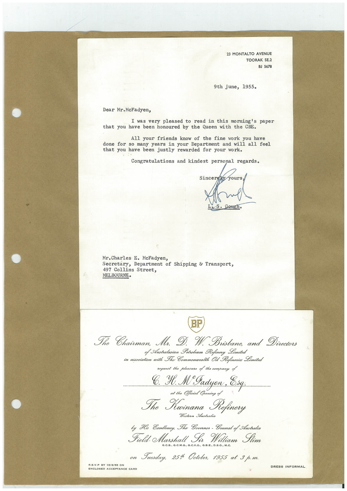

Book 1 · scan 142


Description
Transcription
Context
Review notes
Compare the machine draft with the scan. Handwriting and names need human review.
Artifacts
Edit the artifacts field in this note’s frontmatter to change these records. This summary is generated.
B01-S142-A01 — Letter & Invitation — Book 1, scan 142
Types: Typed document, Letter, Invitation
Scope: Whole scanned page; individual items can be split out during review.
Caption: Not mapped yet.
Caption source: Not recorded yet.
Caption status: unmapped
Machine transcription
23 MONTALTO AVENUE TOORAK SE.2 BJ 5678 9th June, 1955. Dear Mr. McFadyen, I was very pleased to read in this morning's paper that you have been honoured by the Queen with the CBE. All your friends know of the fine work you have done for so many years in your Department and will all feel that you have been justly rewarded for your work. Congratulations and kindest personal regards. Sincerel yours Mr. Charles I. McFadyen, Secretary, Department of Shipping & Transport, 497 Collins Street, MELBOURNE• BP The Chairman. Mr. D. W. Brisbane, and Directors of Australasian Potroleum Refinery Limited in association with The Commonwealth Oil Refineries Limited request the pleasure of the company of Yl. M°Jadyen. at the Official Opening of To Krinana Refinery Western Australia by His Exollenoy, The Govornor - General of Australia Field. Marshall Sir William Slim G.C.B.. G.C.M.G., G.C.V.O., G.B.E., D.S.O., M.C. on Tuesduy, 2514 Ootober, 1955 at 3 p.m. R.S.V.P BY 15/8/55 ON DRESS INFORMAL ENCLOSED ACCEPTANCE CARD